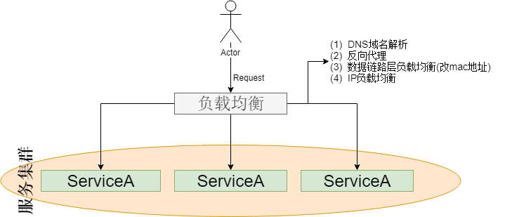
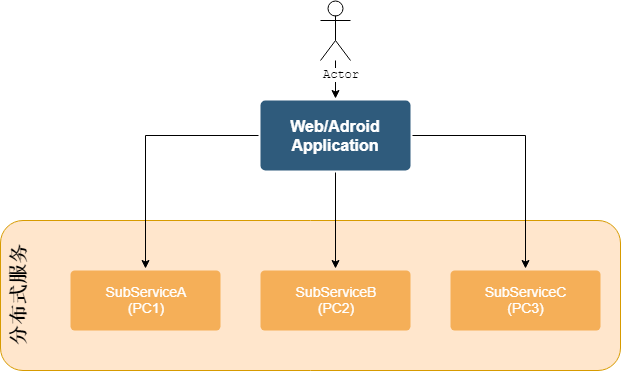

集群和分布式
看过很多篇幅的文章说集群和分布式，但是有时候这两个东西还是会搞混淆，并且不是那么容易说的清楚，在这里对这两个 概念做一个归纳和总结。
集群(以服务为例)
说明：就是所有的节点都提供相同的功能，这就是集群。目的及优势：
- 高可用性(一个节点宕机了，其它的节点还能继续使用)
- 分流(缓解了单个服务器的压力)
图示: 
分布式
说明：每个节点提供的功能都不一样，多个小的功能模块组成一个大的功能服务。 每一个服务可以部署在同一台PC上，也可以部署在不同的PC上。目的及优势：
- 独立部署
- 因为功能独立并且小便于扩展
- 提高系统容错，一个节点宕机了，并不会引起整体系统的瘫痪
图示： 
负载均衡(反向代理)
在集群的图中我们看到了负载均衡层，负载均衡有几种调度算法，像nginx可以通过配置来处理：
- 轮询，每个请求按时间顺序逐一分配到不同的后端服务上去。
- 轮询权值，按权重分配
- IP_hash，按访问IP的hash结果分配
- url_hash
- 按后端服务器响应时间长短分配
- least_conn最少链接数优先分配
备注：常用的还是一致性hash
高并发
高并发按业务区分，分成两种情况：
- 读高并发
- 写高并发
读高并发的情况，常见的解决方案有：
- 分库：建立主从备份，所有读取的操作都自从数据库中读取，缓解单个数据库的压力(同时可以应用数据库集群)
- 数据分成冷热两种数据，热数据使用缓存集群，缓解了高并发下数据库读的压力
写高并发的情况，引入消息中间件。
优势：
- 解耦业务逻辑
- 异步处理，提高系统响应速度，提升用户体验
- 削峰填谷
劣势：
- 降低了系统的可用性(消息中间件挂了，系统就瘫痪了)
- 增加了系统开发的难度
- 数据一致性的问题(通过下游确认机制可以完成，避免使用分布式事务)
承载高并发的架构演进经验及总结：
- 负载均衡层，将大量的请求均匀的打到系统上
- 分库分表，读写分离
- 不要盲目的进行数据库服务器的扩容。针对写少读多的请求，引入缓存集群，用缓存抗住高并发的请求。 针对写入多的情况，引入消息中间件集群，写请求异步处理，实现削峰填谷。
消息中间件引发的数据不一致的问题
通过确认机制来解决
保证消息中间件的高可用性
- 镜像集群